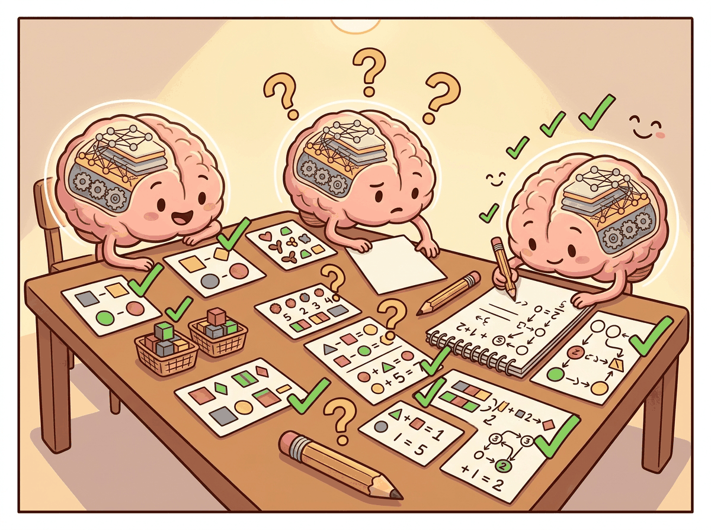

We proved that Transformers can theoretically compute anything. In practice, they mostly compute the next plausible word, which is still pretty good.
N Norm, The Stability Expert
Prerequisites
This research-focused section assumes comfort with the Transformer architecture from Section 4.1 and a basic understanding of computational complexity (P, NP, PSPACE). The deep learning fundamentals from Section 0.2 (universal approximation for MLPs) provide useful context. The practical implications of expressiveness limits connect to chain-of-thought prompting in Section 10.2.
This section surveys theoretical results about the computational power of Transformers. The material is more abstract than the rest of this module and draws on complexity theory. It is included because these results have direct practical implications for understanding why certain tasks are easy or hard for LLMs, and why chain-of-thought prompting helps.

1. Universal Approximation
The classical universal approximation theorem for neural networks states that a single hidden layer with enough neurons can approximate any continuous function on a compact domain to arbitrary accuracy. A natural question: do Transformers have an analogous property for sequence-to-sequence functions?
1.1 Transformers as Universal Approximators of Sequence Functions
Yun et al. (2020) proved that Transformers are universal approximators of continuous sequence-to-sequence functions. Specifically, for any continuous function $f: R^{n \times d} \rightarrow R^{n \times d}$ and any $\epsilon > 0$, there exists a Transformer network that approximates f uniformly to within $\epsilon$. The key requirements are:
- Sufficient depth (number of layers)
- Sufficient width (model dimension and feed-forward dimension)
- The attention mechanism must be able to implement "hard" attention (approaching argmax behavior)
This result tells us that the Transformer architecture is, in principle, capable of representing any continuous mapping from input sequences to output sequences. Of course, universal approximation says nothing about whether gradient-based training will find a good approximation, or how large the network needs to be. Still, it provides the theoretical foundation: the architecture itself is not the bottleneck.
The proof of universal approximation critically relies on the feed-forward network, not just attention. Attention alone (without the FFN) is a linear operator over the value vectors; it can only compute weighted averages. The FFN provides the nonlinear transformations needed to approximate arbitrary functions. This is one theoretical justification for why the FFN matters so much in practice, as we discussed in Section 4.1.
2. Transformers as Computational Models
Beyond approximation, we can ask: what computational problems can Transformers solve? This requires connecting Transformers to formal computational complexity classes.
2.1 Fixed-Depth Transformers and TC0
A foundational result by Merrill and Sabharwal (2023) shows that a fixed-depth Transformer with log-precision arithmetic (O(log n) bits per number, where n is the input length) can be simulated by TC0 circuits, and vice versa. $TC^{0}$ is the complexity class of problems solvable by constant-depth, polynomial-size threshold circuits.
This has concrete implications for what fixed-depth Transformers cannot do:
- Cannot solve problems that require counting precisely (e.g., determining if the number of 1s in a binary string is exactly equal to the number of 0s), because $TC^{0}$ cannot solve the "majority with equality" problem.
- Cannot solve inherently sequential problems like evaluating nested compositions of functions (e.g., computing $f(f(f(...f(x)...)))$ with n nested applications of an arbitrary function f).
- Cannot simulate a general-purpose Turing machine for an arbitrary number of steps, because $TC^{0}$ is strictly contained in P.
2.2 The Precision Assumption Matters
The $TC^{0}$ characterization assumes log-precision arithmetic: each number in the Transformer uses O(log n) bits. With unbounded precision (arbitrary-precision real numbers), a Transformer can simulate any Turing machine in polynomial time, making it trivially universal. This highlights that the precision of computation is a critical variable in the theoretical analysis.
In practice, Transformers use 16-bit or 32-bit floating point, which is somewhere between log-precision and unbounded precision. The practical implications of the theoretical results hold approximately: tasks requiring deep sequential reasoning are indeed harder for Transformers, even if the formal impossibility results rely on specific precision assumptions.
3. Limitations: What Transformers Struggle With
The theoretical results predict specific failure modes, and these predictions are borne out empirically. Here are the key categories of problems that fixed-depth Transformers find difficult:
3.1 Inherently Sequential Computation
Problems that require a long chain of dependent computation steps are hard for Transformers because each layer can only perform a constant amount of sequential work. The total sequential depth is the number of layers, typically 32 to 96. Tasks requiring more sequential steps than this (relative to the model's precision) become problematic.
Example: multi-step arithmetic. Computing ((3 + 7) * 2 - 4) / 3 requires evaluating
operations in order. Each operation depends on the result of the previous one. A fixed-depth
Transformer must either learn to parallelize this computation (difficult) or represent the
intermediate results within a single forward pass (limited by depth).
3.2 Counting and Tracking State
Exact counting (e.g., "does this string have exactly 47 opening parentheses?") is difficult because log-precision attention scores cannot represent arbitrary integers precisely for long sequences. The model can approximate counting for small numbers but degrades as counts grow large.
3.3 Graph Reasoning
Problems like graph connectivity, shortest paths, and cycle detection require iterative algorithms that propagate information through the graph structure. A constant-depth Transformer can only propagate information a constant number of "hops" per layer, limiting its ability to reason about graph structures that require many hops.
These theoretical limitations apply to fixed-depth, fixed-precision Transformers. Real LLMs are very large (96+ layers), have moderately high precision (BF16/FP32), and are trained on massive datasets that may help them learn approximate solutions. The theory tells us which tasks will be hard and where to expect failure modes, not that the model will always fail. Large models often "mostly work" on these tasks but exhibit characteristic errors at the boundary of their capability.
4. Chain-of-Thought Extends Computational Power
Asking a Transformer to "think step by step" literally gives it more computation, because each generated token is another forward pass through billions of parameters. It is as if you could become smarter simply by talking to yourself longer, which, come to think of it, is not a terrible description of how humans work either.
This is perhaps the most practically important theoretical result. Chain-of-thought (CoT) reasoning, where the model generates intermediate reasoning steps before producing a final answer, fundamentally changes the computational model. We explore how to elicit CoT through prompt engineering techniques in Section 10.2, and how it shapes reasoning-focused models in Section 7.3. Instead of computing the answer in a single forward pass (constant depth), the model now performs computation proportional to the number of generated tokens.
4.1 CoT as Additional Computation Steps
When a Transformer generates T tokens of chain-of-thought reasoning, each token's generation involves a full forward pass through the model. The information from each token is fed back as input for the next, creating an effective sequential computation depth of $T \times N$ (tokens times layers). This is a fundamentally different computation than a single forward pass.
Feng et al. (2023) and others have shown that a fixed-size Transformer with chain-of-thought (unbounded generation length) can simulate any Turing machine. The generated tokens serve as the Turing machine's tape, and each forward pass computes one step of the Turing machine's transition function. This means CoT is not just a prompting trick; it provably extends the computational class of the model from $TC^{0}$ to Turing-complete.
4.2 Why CoT Helps on Hard Problems
Consider the task of multiplying two large numbers, say 347 × 892. A single forward pass through a Transformer must compute this in constant depth, which the theory predicts is very difficult (large integer arithmetic is not in $TC^{0}$). But with CoT, the model can:
- Break the multiplication into partial products (347 × 2, 347 × 90, 347 × 800)
- Compute each partial product (one or two tokens of intermediate computation each)
- Add the partial products (again, with intermediate steps)
- Produce the final answer
Each individual step is simple enough for a single forward pass. The chain of thought provides the sequential depth that a single pass cannot.
4.3 Implications for LLM Design and Prompting
This theoretical framework has direct practical consequences:
- Prompting for reasoning: Asking the model to "think step by step" is not just about better prompts; it gives the model additional computational depth for problems that require it.
- Token budget matters: For hard reasoning tasks, limiting the model's output length directly limits its computational power. Longer chains of thought enable harder computations.
- Scratchpad training: Training models to use intermediate computation (reasoning tokens, scratchpads) is a way to extend their effective depth. This is the principle behind approaches like "thinking" tokens in some recent models.
- Verifiable vs. generative reasoning: The model's ability to generate a correct proof (step by step) may exceed its ability to directly produce the answer, because generation provides the sequential depth that direct answers require doing in a single pass.
5. Open Questions
Several fundamental questions remain open in this area:
- Practical expressiveness gaps: The theory identifies tasks that are provably hard for fixed-depth Transformers, but we lack a precise understanding of which real-world tasks are affected. Are there important NLP tasks that current models fail at specifically because of computational depth limitations?
- Depth vs. width tradeoffs: How does the tradeoff between model depth and model width affect the class of computable functions in practice? A very wide but shallow model versus a narrow but deep model may have qualitatively different capabilities.
- Implicit chain-of-thought: Can Transformers learn to perform internal "chain-of-thought" reasoning within their hidden layers, effectively using the residual stream as a scratchpad? Some evidence suggests this happens (intermediate layers performing identifiable reasoning steps), but the theory is not well developed.
- SSMs and expressiveness: How does the computational class of SSMs (Mamba, RWKV) compare to Transformers? SSMs have a recurrent structure that provides sequential depth, but they compress information into a fixed-size state. The expressiveness tradeoffs are not yet fully understood.
Understanding $TC^{0}$ limitations directly informs prompt design. A developer building an LLM-based data validation tool needed the model to count how many rows in a CSV snippet violated a constraint. Asking "How many rows have values above 100?" consistently produced wrong answers for tables with more than about 20 rows, because exact counting is outside $TC^{0}$. Switching the prompt to chain-of-thought ("Check each row one at a time, marking YES or NO, then count the YES marks") solved the problem, because the sequential token generation provided the iterative depth that a single forward pass could not. This pattern generalizes: whenever a task requires iteration or exact counting, structuring the prompt to externalize the loop as generated tokens aligns the problem with the model's computational strengths.
The computational limitations of fixed-depth Transformers echo a much older result in mathematical logic. Godel's incompleteness theorems (1931) showed that any sufficiently powerful formal system contains true statements it cannot prove. Similarly, a fixed-depth Transformer contains functions it can approximate in theory but cannot compute in practice within its forward pass. Chain-of-thought reasoning is analogous to extending the proof system: by generating intermediate tokens, the model gains access to computations that were previously unreachable, just as adding axioms to a formal system can make previously unprovable statements provable. This raises a philosophical question: if an LLM's reasoning ability depends on the length of its chain of thought, is its "intelligence" a property of the model itself, or of the model plus its output medium? The answer connects to the extended mind thesis discussed in Section 21.2, where tool use expands an agent's cognitive boundary.
Key Takeaways
- Transformers are universal approximators of continuous sequence-to-sequence functions, given sufficient depth and width.
- Fixed-depth Transformers with log-precision arithmetic correspond to the complexity class $TC^{0}$, which cannot solve inherently sequential problems or problems requiring deep iterative computation.
- Chain-of-thought reasoning fundamentally extends the computational power of Transformers by providing additional sequential depth through token generation.
- With unbounded CoT length, Transformers become Turing-complete; this is not just a prompting technique but a provable increase in computational class.
- These theoretical results predict practical failure modes: tasks requiring long sequential computation, exact counting, and graph reasoning are harder for single-pass Transformers.
Check Your Understanding
1. What does the universal approximation theorem for Transformers say, and what does it not say?
Show Answer
2. Why can a fixed-depth Transformer not solve arbitrary graph connectivity problems?
Show Answer
3. How does chain-of-thought reasoning change the computational class of a Transformer?
Show Answer
4. Why does the precision assumption matter in the theoretical analysis?
Show Answer
5. Give a practical example where CoT helps and explain why using the theory.
Show Answer
You now understand the Transformer architecture: how it processes tokens, what each component contributes, and what theoretical limits it faces. In Chapter 05, you will learn what to do with the logits that come out of the final layer. How do we turn a probability distribution over 50,000 tokens into actual generated text? The answer is more subtle than you might expect.
Formal reasoning capacity of LLMs is a rapidly evolving theoretical topic. Merrill and Sabharwal (2024) showed that bounded-precision Transformers can only solve problems in TC^0 without chain-of-thought, but with CoT they can simulate any polynomial-time computation. This has practical implications: reasoning models like OpenAI's o1/o3 and DeepSeek-R1 use extended thinking traces precisely to break through these expressiveness limits. Meanwhile, Feng et al. (2023) proved that log-precision Transformers can solve problems outside TC^0 when given enough layers, suggesting that depth trades off with the need for explicit reasoning chains. See Section 10.2 for the practical implications of these results in prompt design.
What's Next?
In the next chapter, Chapter 05: Decoding Strategies and Text Generation, we shift from architecture to generation, exploring the decoding strategies that turn model outputs into coherent text.